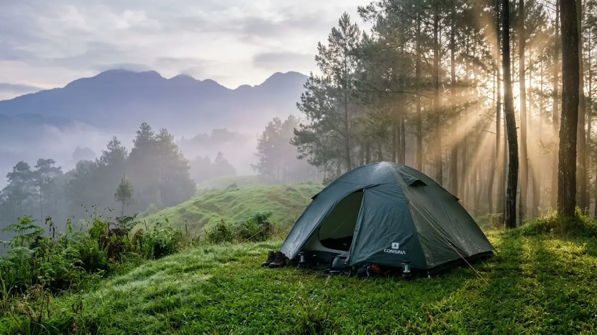
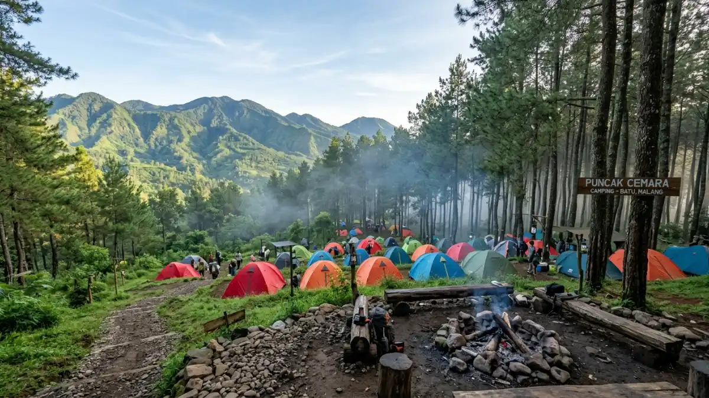

Penyewaan tenda camping di Batu memudahkan wisatawan menikmati aktivitas outdoor tanpa harus membeli perlengkapan sendiri.Harga penyewaan tenda camping di Batu berkisar antara Rp50.000 hingga Rp250.000 per malam tergantung jenis tenda, kapasitas, dan kelengkapan paket yang dipilih.
- Apa Itu Penyewaan Tenda Camping di Batu?
- Berapa Harga Penyewaan Tenda Camping di Batu?
- Di Mana Lokasi Camping Populer di Batu yang Dekat Penyewa Tenda?
- Apa Saja yang Biasanya Termasuk dalam Paket Sewa Tenda di Batu?
- Bagaimana Cara Memilih Tempat Sewa Tenda yang Tepat di Batu?
- Kesalahan Umum Saat Menyewa Tenda Camping di Batu
- Tips Hemat Sewa Tenda Camping di Batu
- FAQ
Apa Itu Penyewaan Tenda Camping di Batu?
Penyewaan tenda camping di Batu adalah layanan jasa sewa alat kemah yang memungkinkan wisatawan menikmati aktivitas outdoor tanpa harus membeli perlengkapan sendiri. Layanan ini mencakup penyediaan tenda, sleeping bag, matras, dan kadang perlengkapan masak.
Kota Batu dikenal sebagai salah satu destinasi wisata alam unggulan di Jawa Timur. Dengan ketinggian rata-rata 700–1.200 meter di atas permukaan laut, suhu udara di Batu terasa sejuk sepanjang tahun, menjadikan kawasan ini ideal untuk kegiatan camping.
Menurut data Dinas Pariwisata Kota Batu tahun 2024, lebih dari 2,3 juta wisatawan mengunjungi kawasan ini setiap tahunnya, dengan segmen wisata alam tumbuh sekitar 18 persen dibanding tahun sebelumnya.
Layanan sewa tenda di Batu sangat relevan bagi pemula yang belum memiliki perlengkapan, keluarga yang ingin mencoba camping sekali-kali, atau backpacker yang ingin menghemat berat bawaan.
Berapa Harga Penyewaan Tenda Camping di Batu?
Harga sewa tenda camping di Batu bervariasi berdasarkan jenis tenda dan kelengkapan paket, mulai Rp50.000 untuk tenda dome kecil hingga Rp250.000 untuk paket family tent lengkap per malam.
Berikut kisaran harga umum yang berlaku di Kota Batu:
Tenda Dome (Kapasitas 1–2 Orang)
Tenda dome adalah pilihan paling terjangkau untuk solo camper atau pasangan. Tenda ini ringan, mudah dipasang, dan cocok untuk lokasi dengan medan tidak terlalu ekstrem.
Kisaran harga: Rp50.000–Rp100.000 per malam
Tenda Dome Besar (Kapasitas 3–4 Orang)
Tenda dome berukuran lebih besar cocok untuk kelompok kecil atau keluarga muda. Tersedia di sebagian besar penyedia sewa di Batu.
Kisaran harga: Rp80.000–Rp150.000 per malam
Tenda Tunnel dan Family Tent (Kapasitas 5–8 Orang)
Tenda tunnel atau family tent menawarkan ruang yang lebih lega dengan area tidur terpisah. Lebih cocok untuk keluarga besar atau rombongan.
Kisaran harga: Rp150.000–Rp250.000 per malam
Paket Sewa Lengkap
Banyak penyedia menawarkan paket bundling yang mencakup tenda + sleeping bag + matras, bahkan kadang tiang lampu atau kompor portable. Paket ini umumnya lebih hemat 15–25 persen dibanding sewa satuan.
Kisaran harga paket: Rp100.000–Rp350.000 per malam tergantung jumlah item dan kapasitas tenda.
Di Mana Lokasi Camping Populer di Batu yang Dekat Penyewa Tenda?
Lokasi camping populer di Batu meliputi kawasan Gunung Panderman, Coban Rondo, Selecta, dan beberapa glamping site yang menyediakan layanan sewa perlengkapan di tempat.
Gunung Panderman
Gunung Panderman dengan ketinggian 2.045 mdpl adalah destinasi pendakian dan camping favorit di Kota Batu. Banyak penyedia sewa tenda berlokasi di dekat pintu masuk jalur pendakian di Desa Oro-Oro Ombo.
Coban Rondo
Coban Rondo menawarkan area camping dengan pemandangan air terjun. Terdapat penyedia sewa tenda di sekitar area parkir dan pintu masuk kawasan wisata ini.

Beberapa lokasi camping populer di Batu dekat dengan tempat penyewaan perlengkapan.Selecta dan Songgoriti
Kawasan Selecta dan Songgoriti cocok untuk camping keluarga dengan fasilitas lebih lengkap. Beberapa penginapan di area ini juga menyediakan layanan sewa tenda untuk yang ingin bermalam di alam terbuka.
Glamping Site di Batu
Beberapa glamping site di Batu menyediakan paket camping all-in-one termasuk tenda, kasur, dan lampu. Harga glamping di Batu umumnya mulai Rp300.000 hingga Rp700.000 per malam per tenda, berbeda dengan sewa tenda konvensional.
Apa Saja yang Biasanya Termasuk dalam Paket Sewa Tenda di Batu?
Paket sewa tenda di Batu umumnya mencakup tenda, sleeping bag, dan matras sebagai komponen utama. Beberapa penyedia menambahkan item seperti lampu tenda, tali, dan kompor.
Item yang umumnya tersedia untuk disewa:
- Tenda (berbagai ukuran dan kapasitas)
- Sleeping bag (dengan rating suhu berbeda)
- Matras foam atau matras inflatable
- Kompor portable dan tabung gas
- Lampu tenda atau headlamp
- Carrier atau daypack (beberapa penyedia)
- Trekking pole (beberapa penyedia)
Penting untuk mengonfirmasi secara spesifik item apa saja yang masuk dalam paket, karena setiap penyedia memiliki ketentuan yang berbeda.
Bagaimana Cara Memilih Tempat Sewa Tenda yang Tepat di Batu?
Memilih penyedia sewa tenda di Batu yang tepat memerlukan perhatian pada kondisi alat, reputasi penyedia, kebijakan pengembalian, dan kelengkapan paket agar camping berjalan lancar.
Periksa Kondisi Peralatan
Pastikan tenda dalam kondisi baik, tidak ada sobek, ritsleting berfungsi, dan tiang tidak bengkok. Tenda yang bocor atau rusak dapat merusak pengalaman camping, terutama saat hujan.
Tanyakan Kebijakan Kerusakan
Sebagian besar penyedia menetapkan biaya penggantian jika alat rusak atau hilang selama masa penyewaan. Pastikan Anda memahami ketentuan ini sebelum menandatangani perjanjian sewa.
Bandingkan Paket dan Harga
Jangan hanya membandingkan harga tenda saja. Hitung total biaya termasuk semua item yang Anda butuhkan, lalu bandingkan paket bundling dengan sewa satuan.
Reservasi Lebih Awal
Menurut data komunitas camping Jawa Timur, ketersediaan tenda di Batu pada akhir pekan panjang dan musim liburan sekolah dapat turun hingga 70 persen dalam 2 hari sebelum tanggal keberangkatan. Reservasi minimal 3 hari sebelumnya sangat dianjurkan.
Cek Ulasan dan Reputasi
Cari ulasan di Google Maps atau grup komunitas camping lokal untuk memastikan penyedia terpercaya, responsif, dan alatnya terawat.
Kesalahan Umum Saat Menyewa Tenda Camping di Batu
Beberapa kesalahan umum yang sering dilakukan saat menyewa tenda camping di Batu antara lain tidak mengecek cuaca, menyewa tenda dengan kapasitas yang terlalu kecil, dan tidak membawa perlengkapan pribadi tambahan.
- Tidak mengecek kapasitas tenda secara realistis. Kapasitas yang tertera pada tenda umumnya adalah kapasitas maksimal. Untuk kenyamanan, pilih tenda dengan kapasitas satu tingkat di atas jumlah orang.
- Tidak membawa perlengkapan pribadi. Perlengkapan seperti jaket tebal, pakaian ganti, obat-obatan, dan lampu kepala biasanya tidak termasuk paket sewa.
- Menyewa tanpa survei lokasi camping. Tidak semua tenda cocok untuk semua medan. Konfirmasi lokasi camping Anda kepada penyedia agar mendapat rekomendasi tenda yang sesuai.
- Mengabaikan rating suhu sleeping bag. Suhu malam di Batu bisa turun hingga 12–16 derajat Celsius. Pastikan sleeping bag yang Anda sewa memiliki rating suhu yang sesuai.
Tips Hemat Sewa Tenda Camping di Batu
Untuk mendapatkan harga sewa tenda terbaik di Batu, pilih paket bundling, hindari periode peak season, dan sewa dalam kelompok agar biaya dapat dibagi rata.
- Sewa dalam kelompok dan bagi biaya sewa family tent lebih hemat daripada masing-masing menyewa tenda dome terpisah.
- Hindari menyewa pada akhir pekan panjang atau libur nasional karena harga cenderung naik 20–30 persen.
- Tanyakan promo atau diskon untuk penyewaan lebih dari 2 malam.
- Cek komunitas camping lokal di media sosial untuk rekomendasi penyedia terpercaya dengan harga terbaik.
Harga penyewaan tenda camping di Batu mulai Rp50.000 per malam untuk tenda dome kecil hingga Rp350.000 untuk paket lengkap keluarga.
Pilih paket bundling untuk efisiensi biaya, reservasi minimal 3 hari sebelum keberangkatan, dan pastikan kondisi alat diperiksa sebelum dibawa ke lokasi.
FAQ
1. Berapa harga sewa tenda camping di Batu untuk 2 orang?
Harga sewa tenda dome kapasitas 2 orang di Batu berkisar antara Rp50.000 hingga Rp100.000 per malam, tergantung penyedia dan kelengkapan paket.
2. Di mana saya bisa menyewa tenda camping di Batu?
Penyewa tenda banyak ditemukan di sekitar kawasan Gunung Panderman (Desa Oro-Oro Ombo), Coban Rondo, dan pusat Kota Batu. Pencarian di Google Maps dengan kata "sewa tenda Batu" juga menampilkan pilihan terdekat.
3. Apakah ada biaya deposit saat menyewa tenda camping di Batu?
Banyak penyedia meminta deposit sebesar Rp100.000–Rp300.000 atau setara nilai alat yang dipinjam sebagai jaminan. Deposit dikembalikan saat alat dikembalikan dalam kondisi baik.